Èapky, amulety, prsteny, opasky, hùlky
Èapky, klobouky, koruny (Zpìt na obsah)
| 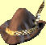 | Jméno: | Selský klobouk |
| Bì¾ný textilní klobouk s pérem vetknutým za stuhu pro zvý¹ení efektu. | ||
| Cena: | 20 | |
| Jméno: | Cestovní èapka | |
| Obyèejná èapka, jejím¾ úèelem je chránit hlavu cestovatele pøed sluncem a prachem. | ||
| Cena: | 100 | |
| 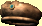 | Jméno: | Parádní èapka |
| Tato èapka, u¹itá podle poslední módy, odpovídá døívìj¹ímu stylu pokrývek hlavy pracujících lidí. Není to ale sama èepice, co by bylo stylové, je to vzor pracujícího èlovìka, co¾ se mladí ¹lechtici pokou¹ejí napodobit, a pracující se zase sna¾í vypadat jako ¹lechta? | ||
| Cena: | 200 | |
| 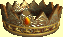 | Jméno: | Koruna |
| Laciná koruna, jaké nosívají goblini, aby zesmì¹nili lidské zvyky. Je vyrobena z bronzu a kameny v ní jsou sklenìné. | ||
| Cena: | 250 | |
| 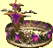 | Jméno: | ©lechtická koruna |
| Pìkná, ponìkud nápadná koruna vyrobená ze zlatého plechu a velkých vysoce kvalitních ametystù. ©lechticùm tvého stavu dobøe padne. | ||
| Cena: | 450 | |
| Jméno: | Královská koruna | |
| Koruny jako je tato jsou èasto vyrobeny za pou¾ití magie zesilující jejich pøístupnost okouzlení. Pokud je nalezena bez okouzlení, jde patrnì o dílo z nìjakého dùvodu nedokonèené. | ||
| Cena: | 650 | |
Opasky (Zpìt na obsah)
| 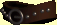 | Jméno: | Ko¾ený opasek |
| Selský opasek. Tento je vyroben ze ¹patnì vyèinìné kù¾e se ¾eleznými rezivými nýty. | ||
| Cena: | 40 | |
| 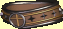 | Jméno: | Honosný opasek |
| Pìknì zpracovaný opasek z dobøe vyèinìné kù¾e a pìkným pro¹íváním. Pøezka je vyrobena z le¹tìného støíbra. | ||
| Cena: | 100 | |
| 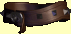 | Jméno: | Pevný opasek |
| Tuhý, ale kvalitní ko¾ený opasek. Tento zøejmì pochází ze západní Erathie. | ||
| Cena: | 225 | |
| 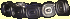 | Jméno: | Støíbrný opasek |
| Velmi pìknì zpracovaný støíbrný opasek. Starý, ale dobøe zachovalý. Na spojích není patrné ¾ádné zakalení, jen pøezka je ponìkud za¹lá. | ||
| Cena: | 450 | |
| Jméno: | Zlatý opasek | |
| Nevkusný a¾ bìda. Je vyroben z prodaného 14 karátového zlata. Na ka¾dém èlánku je jiný, ne pøíli¹ kvalitnì vyra¾ený reliéf. Nevzhledný, ale cenný. | ||
| Cena: | 600 | |
Prsteny (Zpìt na obsah)
| 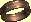 | Jméno: | Mosazný prsten |
| Za¹lý mosazný prsten. Kdy¾ ho vyle¹tí¹, mo¾ná ho prodá¹? ale moc si od toho neslibuj. | ||
| Cena: | 100 | |
| 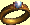 | Jméno: | Perlový prsten |
| Tomuto jinak bì¾nému zlatému prstenu dominuje velká nedokonalá perla. | ||
| Cena: | 300 | |
| Jméno: | Platinový prsten | |
| Na první pohled støíbrný, ale ve skuteènosti je tento prsten vyrobený z platiny. Kamínek v nìm je malý, kazový diamant. | ||
| Cena: | 500 | |
| 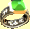 | Jméno: | Smaragdový prsten |
| Velký brou¹ený smaragd je zasazen do jinak obyèejného støíbrného prstenu. | ||
| Cena: | 700 | |
| Jméno: | Safírový prsten | |
| Do tohoto støíbrného a zlatého prstenu jsou zasazeny tøi malé safíry. Prsteny této kvality bývají èasto okouzleny. | ||
| Cena: | 900 | |
| 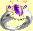 | Jméno: | Èarodìjnický prsten |
| Tato slo¾itá a okázalá sestava ametystù a platiny mù¾e být pøita¾livá, pokud se ti takové vìci líbí. | ||
| Cena: | 1100 | |
| Jméno: | Kouzelný prsten | |
| Do pìkného zlatého prstenu jsou vsazeny dva kameny v sobì - smaragd a granát. | ||
| Cena: | 1300 | |
| 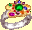 | Jméno: | Bly¹tivý prsten |
| Nádherná rù¾ice rubínù a smaragdù ve zlatì. Prsten samotný je platinový. | ||
| Cena: | 1500 | |
| Jméno: | Èarodìjný prsten | |
| Tøi dokonalé granáty zasazené do støíbra kontrastují s magií, jí¾ bylo pou¾ito pøi výrobì tohoto prstenu. Pøi jeho dlouhodobém no¹ení tì zaène brnìt ruka. | ||
| Cena: | 1700 | |
| Jméno: | Andìlský prsten | |
| Podivný hnìdý kámen (zkamenìné døevo?) je zasazen do kovu, který vypadá jako zlato, ale je mnohem lehèí. | ||
| Cena: | 2000 | |
Amulety (Zpìt na obsah)
| 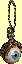 | Jméno: | Oèní bulva |
| Tento zvlá¹tní amulet tvoøí sklenìné oko na levném mosazném øetízku. Novinka, ale zøejmì bezcenná. | ||
| Cena: | 500 | |
| 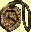 | Jméno: | Bronzový amulet |
| Nepravidelný bronzový amulet s nejasným reliéfem na líci. Laciný a nevkusný. | ||
| Cena: | 750 | |
| 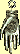 | Jméno: | Èarodìjèin amulet |
| K výrobì tohoto podivného støíbrného amuletu byl pou¾it sádrový odlitek dìtské ruky. V jeho støedu je znát jakýsi neidentifikovatelný symbol. | ||
| Cena: | 1000 | |
| 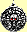 | Jméno: | Pøívìsek se smrtihlavem |
| Tohle je vìc, jakou mù¾e¹ oèekávat od nekromantù a pochází pøímo z Deyje. Støíbrná lebka ve støedu pøívìsku je modelována podle skuteèné zmen¹ené lebky a rubíny v jejích oèních dùlcích ve tmì záøí. | ||
| Cena: | 1250 | |
| 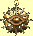 | Jméno: | Sluneèní amulet |
| Vzne¹ený zlatý amulet s pradávným symbolem slunce uprostøed. Pochází z Karigoru a jeho øemeslné zpracování je dokonalé. | ||
| Cena: | 1500 | |
Hùlky (Zpìt na obsah)
| 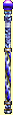 | Jméno: | Hùlka ohnì |
| Magický proces, kterým byla tato hùlka okouzlena, ji obarvil do nebesky modrého odstínu. Je vyrobena ze døeva a ze skla. Abys ji pou¾il, musí¹ ní ozbrojit svou postavu. | ||
| Cena: | 1000 | |
| Jméno: | Hùlka jisker | |
| Magický proces, kterým byla tato hùlka okouzlena, ji obarvil do nebesky modrého odstínu. Je vyrobena ze døeva a ze skla. Abys ji pou¾il, musí¹ ní ozbrojit svou postavu. | ||
| Cena: | 1000 | |
| Jméno: | Hùlka jedu | |
| Magický proces, kterým byla tato hùlka okouzlena, ji obarvil do nebesky modrého odstínu. Je vyrobena ze døeva a ze skla. Abys ji pou¾il, musí¹ ní ozbrojit svou postavu. | ||
| Cena: | 1000 | |
| Jméno: | Hùlka omráèení | |
| Magický proces, kterým byla tato hùlka okouzlena, ji obarvil do nebesky modrého odstínu. Je vyrobena ze døeva a ze skla. Abys ji pou¾il, musí¹ ní ozbrojit svou postavu. | ||
| Cena: | 1000 | |
| Jméno: | Hùlka zranìní | |
| Magický proces, kterým byla tato hùlka okouzlena, ji obarvil do nebesky modrého odstínu. Je vyrobena ze døeva a ze skla. Abys ji pou¾il, musí¹ ní ozbrojit svou postavu. | ||
| Cena: | 1000 | |
| 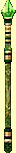 | Jméno: | Vílí hùlka svìtla |
| Døevìná hùlka natøená na zeleno a kovaná mosazí. Na jednom konci sedí velký kazový smaragd. Abys ji pou¾il, musí¹ ní ozbrojit svou postavu. | ||
| Cena: | 1500 | |
| Jméno: | Vílí hùlka ledu | |
| Døevìná hùlka natøená na zeleno a kovaná mosazí. Na jednom konci sedí velký kazový smaragd. Abys ji pou¾il, musí¹ ní ozbrojit svou postavu. | ||
| Cena: | 1500 | |
| Jméno: | Vílí hùlka bièe | |
| Døevìná hùlka natøená na zeleno a kovaná mosazí. Na jednom konci sedí velký kazový smaragd. Abys ji pou¾il, musí¹ ní ozbrojit svou postavu. | ||
| Cena: | 1500 | |
| Jméno: | Vílí hùlka mysli | |
| Døevìná hùlka natøená na zeleno a kovaná mosazí. Na jednom konci sedí velký kazový smaragd. Abys ji pou¾il, musí¹ ní ozbrojit svou postavu. | ||
| Cena: | 1500 | |
| Jméno: | Vílí hùlka roje hmyzu | |
| Døevìná hùlka natøená na zeleno a kovaná mosazí. Na jednom konci sedí velký kazový smaragd. Abys ji pou¾il, musí¹ ní ozbrojit svou postavu. | ||
| Cena: | 1500 | |
| 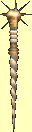 | Jméno: | Alakornská hùlka ohnivých koulí |
| Hùlky, jako tato, vyrobené z dutého rohu jednoro¾ce a korunované trnitou mosaznou koulí, jsou zplozeny zlem a krutostí. Jejich okouzlení bývá u¾iteèné, tak¾e jediným problémem je, zdali si doká¾e¹ morálnì zdùvodnit u¾ívání pøedmìtu tak zvrácenì vytvoøeného. Abys ji pou¾il, musí¹ ní ozbrojit svou postavu. | ||
| Cena: | 2000 | |
| Jméno: | Alakornská hùlka kyseliny | |
| Hùlky, jako tato, vyrobené z dutého rohu jednoro¾ce a korunované trnitou mosaznou koulí, jsou zplozeny zlem a krutostí. Jejich okouzlení bývá u¾iteèné, tak¾e jediným problémem je, zdali si doká¾e¹ morálnì zdùvodnit u¾ívání pøedmìtu tak zvrácenì vytvoøeného. Abys ji pou¾il, musí¹ ní ozbrojit svou postavu. | ||
| Cena: | 2000 | |
| Jméno: | Alakornská hùlka blesku | |
| Hùlky, jako tato, vyrobené z dutého rohu jednoro¾ce a korunované trnitou mosaznou koulí, jsou zplozeny zlem a krutostí. Jejich okouzlení bývá u¾iteèné, tak¾e jediným problémem je, zdali si doká¾e¹ morálnì zdùvodnit u¾ívání pøedmìtu tak zvrácenì vytvoøeného. Abys ji pou¾il, musí¹ ní ozbrojit svou postavu. | ||
| Cena: | 2000 | |
| Jméno: | Alakornská hùlka èepelí | |
| Hùlky, jako tato, vyrobené z dutého rohu jednoro¾ce a korunované trnitou mosaznou koulí, jsou zplozeny zlem a krutostí. Jejich okouzlení bývá u¾iteèné, tak¾e jediným problémem je, zdali si doká¾e¹ morálnì zdùvodnit u¾ívání pøedmìtu tak zvrácenì vytvoøeného. Abys ji pou¾il, musí¹ ní ozbrojit svou postavu. | ||
| Cena: | 2000 | |
| Jméno: | Alakornská hùlka okouzlení | |
| Hùlky, jako tato, vyrobené z dutého rohu jednoro¾ce a korunované trnitou mosaznou koulí, jsou zplozeny zlem a krutostí. Jejich okouzlení bývá u¾iteèné, tak¾e jediným problémem je, zdali si doká¾e¹ morálnì zdùvodnit u¾ívání pøedmìtu tak zvrácenì vytvoøeného. Abys ji pou¾il, musí¹ ní ozbrojit svou postavu. | ||
| Cena: | 2000 | |
| 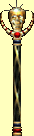 | Jméno: | Tajemná hùlka výbuchu |
| Hùlka z le¹tìného ebenu korunovaná zmen¹enou ozdobenou hlavou pora¾eného nepøítele. Takové hùlky jsou schopny pojmout silná okouzlení. Abys ji pou¾il, musí¹ ní ozbrojit svou postavu. | ||
| Cena: | 2500 | |
| Jméno: | Tajemná hùlka pìsti | |
| Hùlka z le¹tìného ebenu korunovaná zmen¹enou ozdobenou hlavou pora¾eného nepøítele. Takové hùlky jsou schopny pojmout silná okouzlení. Abys ji pou¾il, musí¹ ní ozbrojit svou postavu. | ||
| Cena: | 2500 | |
| Jméno: | Tajemná hùlka kamenù | |
| Hùlka z le¹tìného ebenu korunovaná zmen¹enou ozdobenou hlavou pora¾eného nepøítele. Takové hùlky jsou schopny pojmout silná okouzlení. Abys ji pou¾il, musí¹ ní ozbrojit svou postavu. | ||
| Cena: | 2500 | |
| Jméno: | Tajemná hùlka ochromení | |
| Hùlka z le¹tìného ebenu korunovaná zmen¹enou ozdobenou hlavou pora¾eného nepøítele. Takové hùlky jsou schopny pojmout silná okouzlení. Abys ji pou¾il, musí¹ ní ozbrojit svou postavu. | ||
| Cena: | 2500 | |
| Jméno: | Tajemná hùlka oblakù | |
| Hùlka z le¹tìného ebenu korunovaná zmen¹enou ozdobenou hlavou pora¾eného nepøítele. Takové hùlky jsou schopny pojmout silná okouzlení. Abys ji pou¾il, musí¹ ní ozbrojit svou postavu. | ||
| Cena: | 2500 | |
| 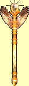 | Jméno: | Okultní hùlka imploze |
| Vzácné vejce fénixe bylo uloupeno z ohnì døíve, ne¾ se z nìj vylíhlo mládì, aby z nìho vznikla koruna této magické hùlky. Její zbytek je vyroben z oceli a pozlacen. Abys ji pou¾il, musí¹ ní ozbrojit svou postavu. | ||
| Cena: | 3000 | |
| Jméno: | Okultní hùlka deformace | |
| Vzácné vejce fénixe bylo uloupeno z ohnì døíve, ne¾ se z nìj vylíhlo mládì, aby z nìho vznikla koruna této magické hùlky. Její zbytek je vyroben z oceli a pozlacen. Abys ji pou¾il, musí¹ ní ozbrojit svou postavu. | ||
| Cena: | 3000 | |
| Jméno: | Okultní hùlka støepin | |
| Vzácné vejce fénixe bylo uloupeno z ohnì døíve, ne¾ se z nìj vylíhlo mládì, aby z nìho vznikla koruna této magické hùlky. Její zbytek je vyroben z oceli a pozlacen. Abys ji pou¾il, musí¹ ní ozbrojit svou postavu. | ||
| Cena: | 3000 | |
| Jméno: | Okultní hùlka zmen¹ení | |
| Vzácné vejce fénixe bylo uloupeno z ohnì døíve, ne¾ se z nìj vylíhlo mládì, aby z nìho vznikla koruna této magické hùlky. Její zbytek je vyroben z oceli a pozlacen. Abys ji pou¾il, musí¹ ní ozbrojit svou postavu. | ||
| Cena: | 3000 | |
| Jméno: | Okultní hùlka zpopelnìní | |
| Vzácné vejce fénixe bylo uloupeno z ohnì døíve, ne¾ se z nìj vylíhlo mládì, aby z nìho vznikla koruna této magické hùlky. Její zbytek je vyroben z oceli a pozlacen. Abys ji pou¾il, musí¹ ní ozbrojit svou postavu. | ||
| Cena: | 3000 | |
copyright 2002 - 2022 by Petr 'Elemir' Levák v¹echna práva vyhrazena